01
НоваяCreate
На главном экране нажимаете «+», выбираете портрет или квадрат и пишете текст. Tap + on the home screen, pick portrait or square, and write the text.
Палитры и шрифты уже на слайде. Портрет или квадрат, сохранение в альбом IGFox. Palettes and fonts are already on the slide. Portrait or square, save to the IGFox album.
В App Store App Store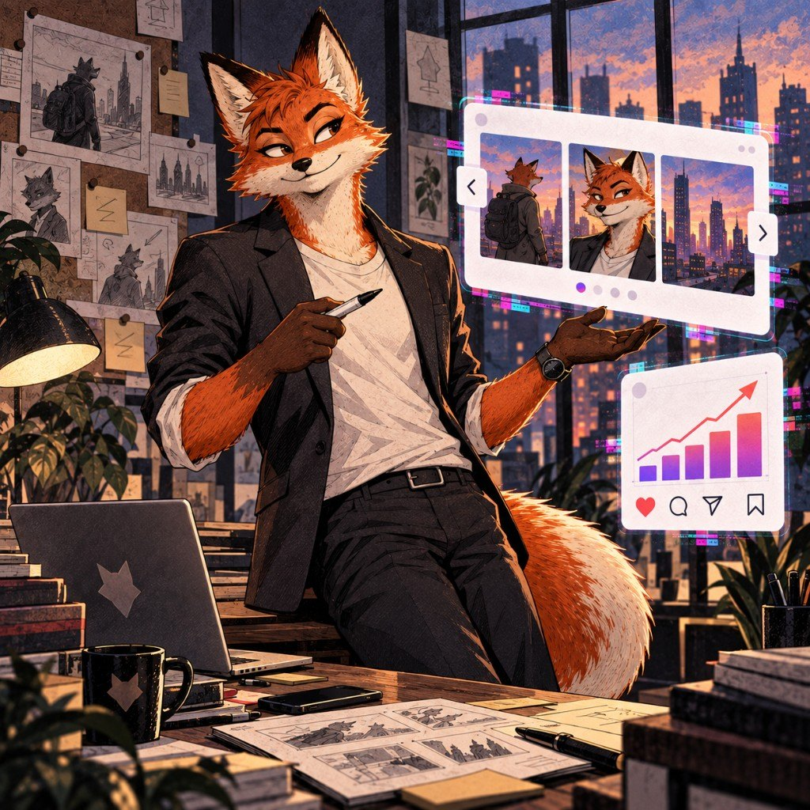
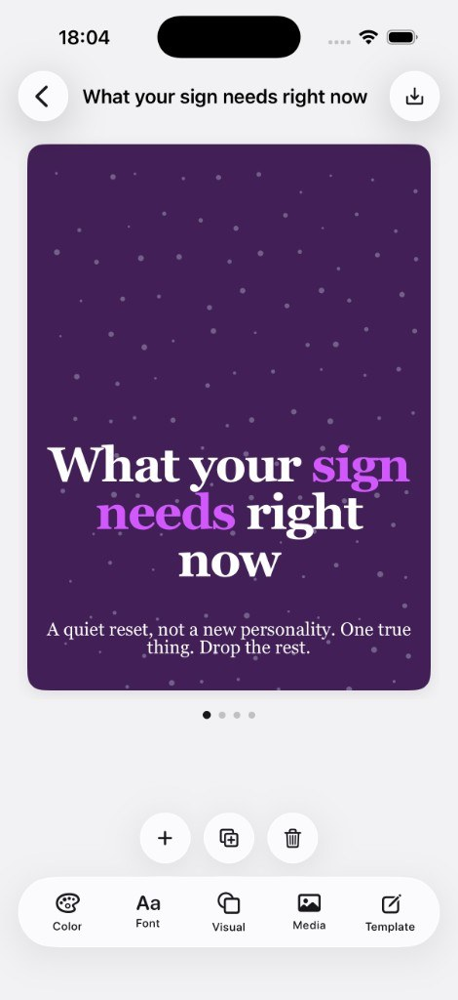
Композиция слайда уже стоит. Вы меняете текст, фото и стиль. Аккаунта нет, проекты остаются на iPhone. The slide already has a composition. You change the text, photos, and look. No account. Projects stay on the iPhone.
Палитры и шрифты подобраны под ленту. Вы правите сам слайд, не собираете его из блоков. Palettes and fonts are chosen for the feed. You edit the slide itself, you do not assemble blocks.
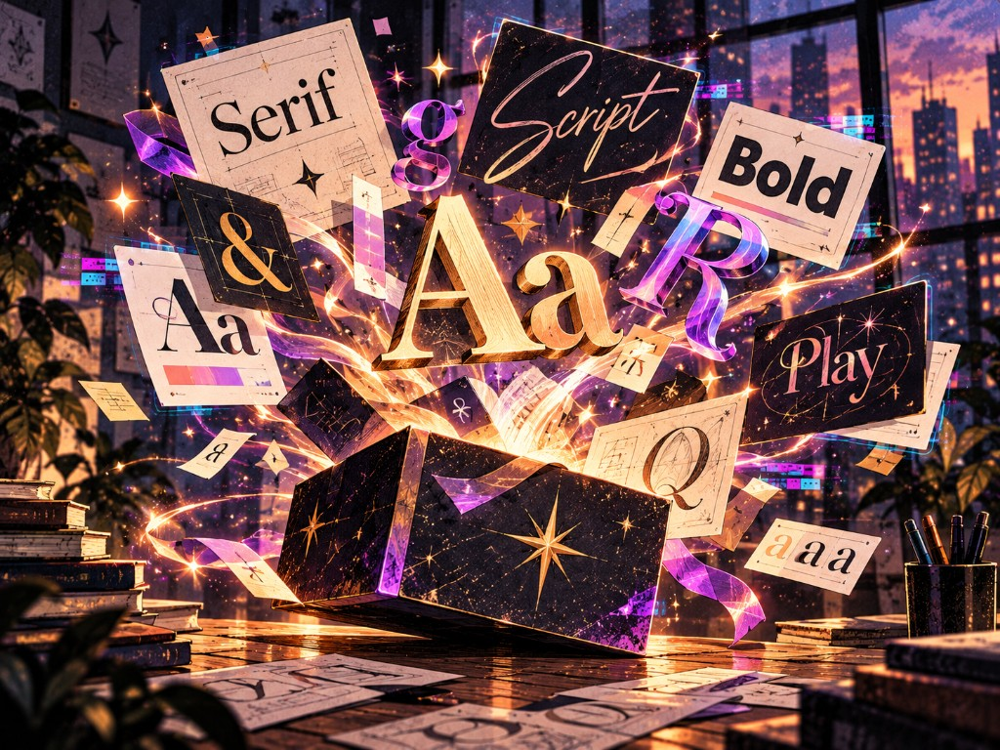
Заголовок и абзац, как в обычном редакторе. Жирный, курсив, цвет слова, маркер и символы. Title and body, like a normal editor. Bold, italic, word color, marker, and symbols.
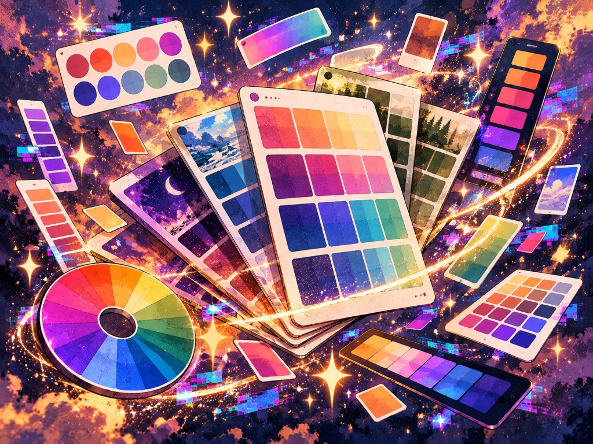
Цветовые схемы, градиенты и характерные шрифты. Стиль можно применить ко всем слайдам. Color schemes, gradients, and character fonts. You can apply the look to every slide.
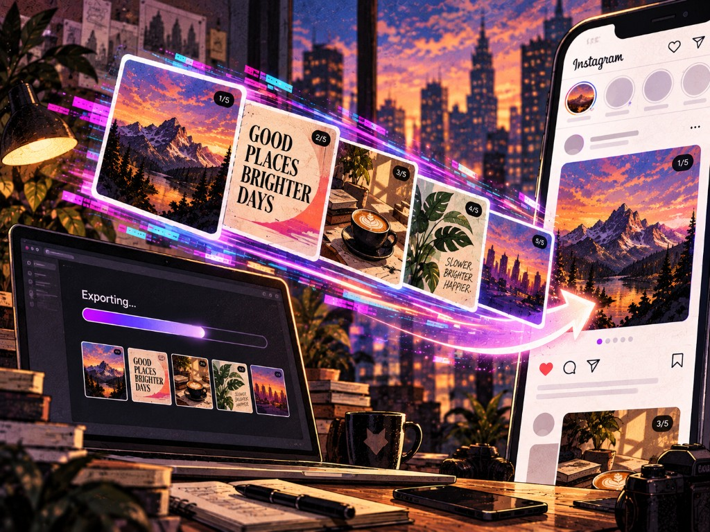
Сохранить всё или выбранные слайды в альбом IGFox, либо отправить через «Поделиться». Водяного знака нет. Save all, save selected slides to the IGFox album, or share. There is no watermark.
Блог, несколько клиентов или лента без штатного дизайнера. Слайд уже собран, вы меняете содержание. A blog, several clients, or a feed with no staff designer. The slide is already built. You change the content.
Нужны карусели, которые дочитывают до последнего слайда и сохраняют. You want carousels people save and swipe through to the end.
Несколько клиентов сразу, каждому свой вид, без долгой сборки в конструкторе. Several clients at once, a distinct look for each, without a long build in a constructor.
Лента всё равно должна выглядеть собранной: палитра и шрифт уже выбраны. The feed still needs to look considered: palette and font are already chosen.
Так делают карусели про красоту и уход, фитнес, финансы, экспертов и коучей, еду и путешествия. People make carousels this way for beauty and skincare, fitness, finance, coaches, food, and travel.
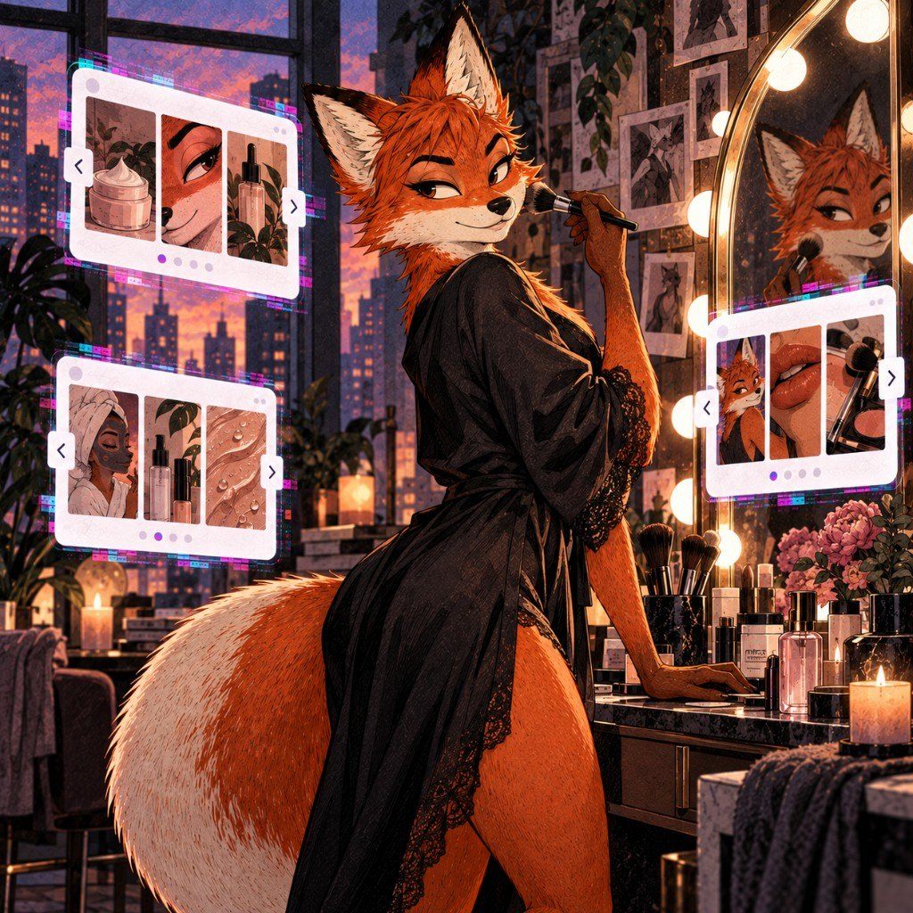
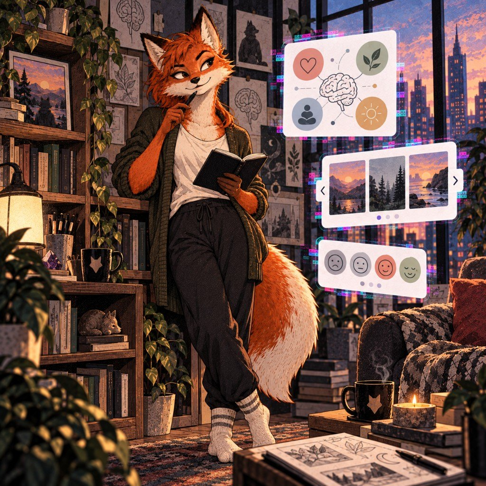
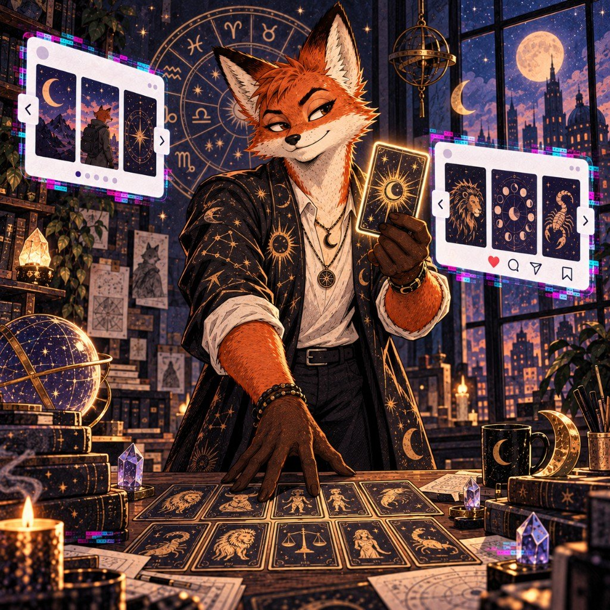
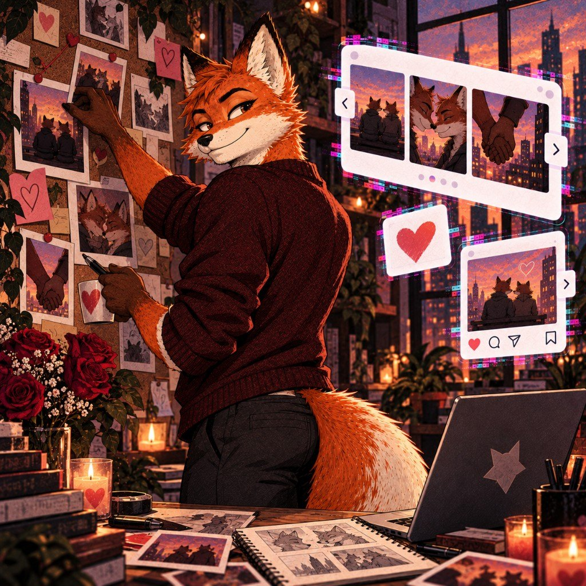
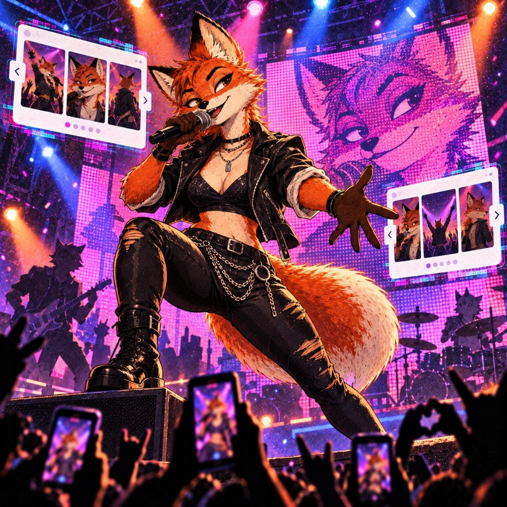
От новой карусели до картинок в Фото. Четыре коротких шага. From a new carousel to images in Photos. Four short steps.
01
На главном экране нажимаете «+», выбираете портрет или квадрат и пишете текст. Tap + on the home screen, pick portrait or square, and write the text.
02
Листаете свайпом. Тап по заголовку или тексту открывает редактор. Можно добавить или дублировать слайд, до 15 штук. Swipe between slides. Tap the title or body to edit. Add or duplicate a slide, up to 15.
03
Цвет, шрифт, визуал и медиа в нижней панели. Размер текста и фото можно менять щипком на слайде. Color, font, visual, and media live in the bottom bar. Pinch the slide to resize text and photo.
04
Иконка вверху справа: отметить слайды, сохранить в альбом IGFox или поделиться. The icon at the top right: select slides, save to the IGFox album, or share.
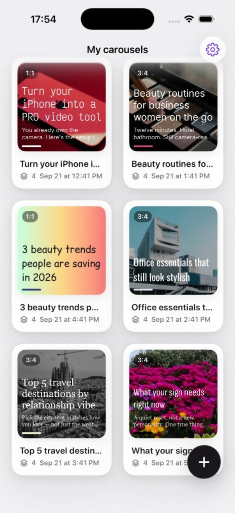
Ручные карусели остаются бесплатными: проекты без лимита, оба формата, разметка текста, фото и экспорт без водяного знака. Handmade carousels stay free: unlimited projects, both formats, text markup, photos, and watermark-free export.
Разработчик: Evgeniia Vorontsova. Developer: Evgeniia Vorontsova.